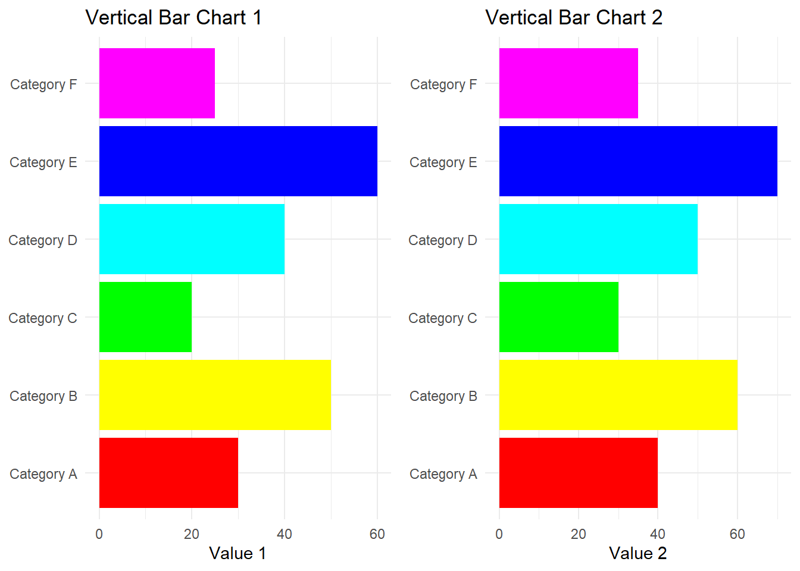

Q. A designer is trained through repetitive practices and creating multiple works on the same object. This assignment follows that method and requests doing charts via a programming approach. Let’s do a hackathon and generate charts in the next 48 hours. Rules: a. Generate a program to create a chart using either R Graphics or ggplot2 or any R packages (no other methods/software are allowed).
Charts for this week: 1-4 in Chart thought starter:
Chart 1: Variable width column chart
library(ggplot2)
Warning: package 'ggplot2' was built under R version 4.2.3
# Make datadata <-data.frame(group =c("A ", "B ", "C ", "D "),value =c(50, 50, 56, 50),number_of_obs =c(150, 250, 300, 275))# Calculate the future positions on the x-axis of each bar (left border, central position, right border)data$right <-cumsum(data$number_of_obs) +30* (0:(nrow(data) -1))data$left <- data$right - data$number_of_obs# Plotggplot(data, aes(ymin =0)) +geom_rect(aes(xmin = left, xmax = right, ymax = value, colour = group, fill = group)) +xlab("Observations") +ylab("Value") +theme_minimal() +# Use the default ggplot2 themetheme(legend.position ="none")
Installing package into 'C:/Users/shiva/AppData/Local/R/win-library/4.2'
(as 'lib' is unspecified)
package 'patchwork' successfully unpacked and MD5 sums checked
The downloaded binary packages are in
C:\Users\shiva\AppData\Local\Temp\RtmpwrOGHE\downloaded_packages
library(ggplot2)library(patchwork)
Warning: package 'patchwork' was built under R version 4.2.3
# Load the ggplot2 and gridExtra librarieslibrary(ggplot2)library(gridExtra)# Create a sample datasetdata <-data.frame(Category =c("Category A", "Category B", "Category C", "Category D", "Category E", "Category F"),Value1 =c(30, 50, 20, 40, 60, 25),Value2 =c(40, 60, 30, 50, 70, 35))# Create the first vertical bar chart (Value1)plot1 <-ggplot(data, aes(x = Category, y = Value1, fill = Category)) +geom_bar(stat ="identity") +scale_fill_manual(values =rainbow(nrow(data))) +labs(title ="Vertical Bar Chart 1",x =NULL,y ="Value 1") +theme_minimal() +theme(legend.position ="none") +coord_flip()# Create the second vertical bar chart (Value2)plot2 <-ggplot(data, aes(x = Category, y = Value2, fill = Category)) +geom_bar(stat ="identity") +scale_fill_manual(values =rainbow(nrow(data))) +labs(title ="Vertical Bar Chart 2",x =NULL,y ="Value 2") +theme_minimal() +theme(legend.position ="none") +coord_flip()# Arrange the two plots side by sidegrid.arrange(plot1, plot2, ncol =2)

Chart 4: Column chart with few items
# Load the ggplot2 librarylibrary(ggplot2)# Create a sample datasetdata <-data.frame(Category =c("Category A", "Category B", "Category C"),Value1 =c(30, 50, 20),Value2 =c(40, 60, 30))# Reshape the data to long format for overlapping columnslibrary(tidyr)data_long <-pivot_longer(data, cols =starts_with("Value"), names_to ="Variable", values_to ="Value")# Create the column chart with slightly overlapping columnsggplot(data_long, aes(x = Category, y = Value, fill = Variable)) +geom_col(position =position_dodge(width =0.7)) +# Adjust the width for overlappinglabs(title ="Overlapping Column Chart",x ="Category",y ="Value") +theme_minimal()